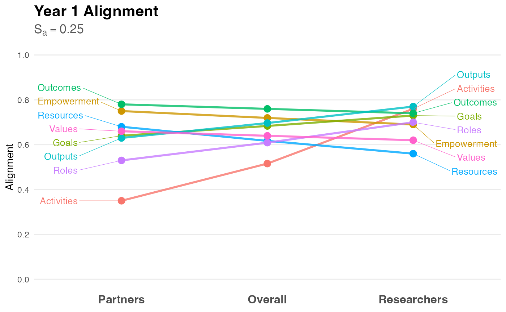

Creates a slopegraph to visualize the alignment (or divergence) between "Partner" and "Researcher" ratings. This visualization style highlights changes in rank and magnitude between two groups, making it immediately apparent where perspectives align or conflict.
Usage
visualize_alignment(
analysis_object,
project_title = "Project Alignment Visualization",
color_palette = NULL
)Arguments
- analysis_object
An object of class
alignment_analysisproduced byanalyze_alignment.- project_title
String. The title of the plot. Defaults to "Project Alignment Visualization".
- color_palette
Named vector of colors. If
NULL, a colorblind-friendly hue palette is generated automatically.
Details
Methodology: The slopegraph, introduced by Edward Tufte (1983), is the preferred method for comparing gradients of change or difference between two distinct states (in this case, two distinct stakeholder roles).
Interpretation:
Flat Lines: Indicate perfect alignment (Partners and Researchers agree on the rating).
Steep Slopes: Indicate divergence (One group values the factor significantly higher than the other).
Crossing Lines: Indicate a difference in priority or ranking (e.g., Partners rate "Goals" highest, while Researchers rate it lowest).
The plot includes the Alignment Score (\(S_a\)) in the subtitle, providing a quick summary statistic alongside the visual detail.
References
Price, J. F. (2024). CEnTR*IMPACT: Community Engaged and Transformative Research – Inclusive Measurement of Projects & Community Transformation. CUMU.
Tufte, E. R. (1983). The Visual Display of Quantitative Information. Graphics Press.
Examples
# 1. Generate and analyze data
data <- generate_alignment_data()
results <- analyze_alignment(data)
# 2. Create the visualization
p <- visualize_alignment(results, project_title = "Year 1 Alignment")
# 3. Display the plot
print(p)
